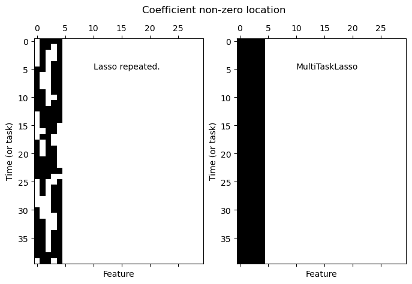
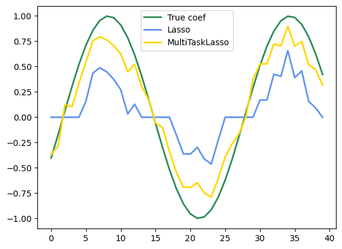

Joint feature selection with multi-task Lasso#
同时执行2个 回归， 即系数，y，x shape都扩大了
Generate data#
import numpy as np
rng = np.random.RandomState(42)
n_samples, n_features, n_tasks = 100, 30, 40
n_relevant_features = 5
coef = np.zeros((n_tasks, n_features))
times = np.linspace(0, 2 * np.pi, n_tasks)
for k in range(n_relevant_features):
coef[:, k] = np.sin((1.0 + rng.randn(1)) * times + 3 * rng.randn(1))
X = rng.randn(n_samples, n_features)
Y = np.dot(X, coef.T) + rng.randn(n_samples, n_tasks)
Fit models#
from sklearn.linear_model import Lasso,MultiTaskLasso
# 分别训练每个任务
coef_lasso_ = np.array(
[Lasso(alpha=0.5).fit(X, y).coef_ for y in Y.T] # 每个任务的 样本训练
)
coef_multi_task_lasso_ = MultiTaskLasso(alpha=1.0).fit(X,Y).coef_
print(coef_lasso_.shape, coef_multi_task_lasso_.shape)
(40, 30) (40, 30)
PLOT#
对比 分别Lasso和 mulittask Lasso
import matplotlib.pyplot as plt
fig = plt.figure(figsize=(8,5))
plt.subplot(1,2,1)
plt.spy(coef_lasso_) # spy可视化稀疏矩阵,空白为系数0
plt.xlabel('Feature')
plt.ylabel('Time (or task)')
plt.text(10,5, 'Lasso repeated.')
plt.subplot(1,2,2)
plt.spy(coef_multi_task_lasso_)
plt.xlabel('Feature')
plt.ylabel('Time (or task)')
plt.text(10, 5, "MultiTaskLasso")
fig.suptitle('Coefficient non-zero location')
Text(0.5, 0.98, 'Coefficient non-zero location')

可以看到 对于那些0系数特征 都正确回归成0了。
至于非0系数特征，Lasso回归为0， 而multimasklasso不是。
观察一个特征的系数 在多任务情况下对比。 multimasklasso应该更好
feature_to_plot = 0
plt.figure()
lw = 2
plt.plot(coef[:, feature_to_plot], color="seagreen", linewidth=lw, label="True coef")
plt.plot(
coef_lasso_[:, feature_to_plot], color="cornflowerblue", linewidth=lw, label="Lasso"
)
plt.plot(
coef_multi_task_lasso_[:, feature_to_plot],
color="gold",
linewidth=lw,
label="MultiTaskLasso",
)
plt.legend(loc="upper center")
plt.axis("tight")
plt.ylim([-1.1, 1.1])
(-1.1, 1.1)
